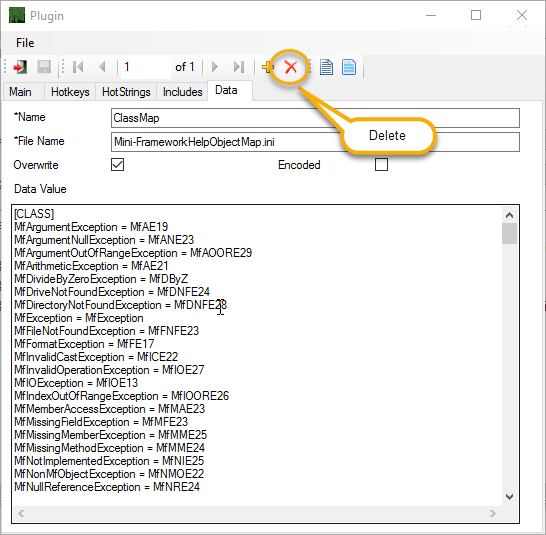

Deleting a Data Item Does not Delete the Data File from Disk
To Delete data from the Plugin navigate to the data item to delete and click the Delete icon  and then click the
and then click the  icon.
icon.
NOTE: Deleting Data from Data Tab DOES NOT delete data from Disk.
Figure 1
